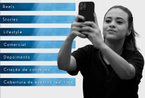

Serviços e Estilos de Conteúdo
Aqui apresento os serviços e estilos de conteúdo que produzo, junto com informações detalhadas e uma média de orçamento para cada serviço. Ao inserir suas informações e escolher o serviço e o estilo de conteúdo, os dados serão enviados para o meu e-mail, e entrarei em contato com você para esclarecer as dúvidas e finalizar o contrato. Obrigado pela preferência e fique à vontade!
Estilos de Conteúdo
Reels: Vídeos curtos e dinâmicos para redes sociais.
Stories: Conteúdo rápido e temporário.
Depoimento: Conteúdo narrado sobre um produto, espaço ou experiência.
Comercial: Vídeo que promove ou divulga um produto, serviço ou marca.
Vlogs: Vídeos longos que podem ser divididos em tópicos diários.
Lifestyle: Conteúdo que mostra o estilo de vida de uma pessoa.
Backstage: Conteúdo que mostra o que acontece por trás das câmeras.
Criação de conteúdo: Produção criativa alinhada à identidade da marca.
Cobertura em tempo real: Registro ao vivo de eventos para engajar o público.
Serviços: StoryMaker

O StoryMaker consiste em stories gravados em tempo real durante o evento. O valor é baseado na diária, ou seja, no tempo em que eu permaneço no evento para gravar os stories. O valor de uma diária de até 8 horas em eventos é de R$ 800. Abaixo, deixo alguns orçamentos pré-definidos. Caso queira contratar, basta clicar em StoryMaker ou no card ao lado e preencher suas informações. Em seguida, entrarei em contato para o preenchimento do contrato e a resolução das dúvidas restantes. Observação: valores sujeitos a alteração conforme o briefing com o cliente.
Serviços: VideoMaker

O VideoMaker consiste na produção de vídeos feitos com celular. Ao contratar esse serviço, a edição dos vídeos já está inclusa. O valor da edição é calculado com base na quantidade de vídeos que você deseja do evento e na duração de cada um. No final, será totalizado o valor dos vídeos editados junto à diária, que também inclui o meu deslocamento até o local. Todos os valores são informados antecipadamente ao cliente, antes do fechamento do contrato. Observação: O cliente tem direito a até 3 alterações. A partir da quarta alteração, será cobrado um valor adicional de R$ 30 por alteração.
Orçamento
A forma de pagamento dos serviços é de 50% no fechamento do contrato e 50% na entrega final. Abaixo vou deixar alguns orçamentos pré definidos: